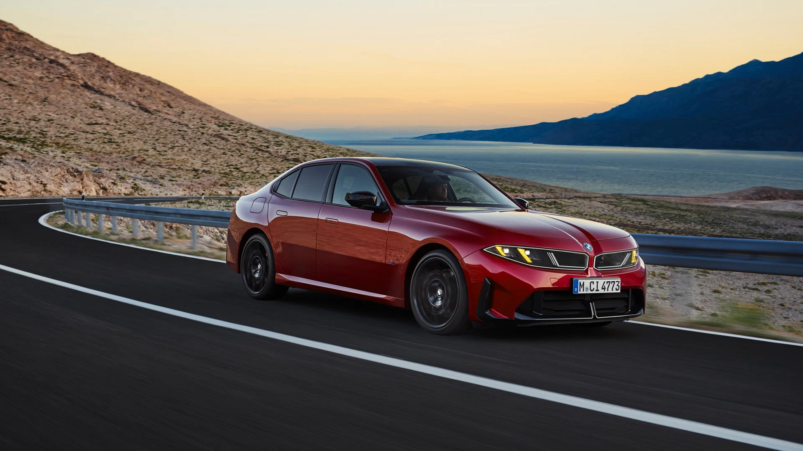
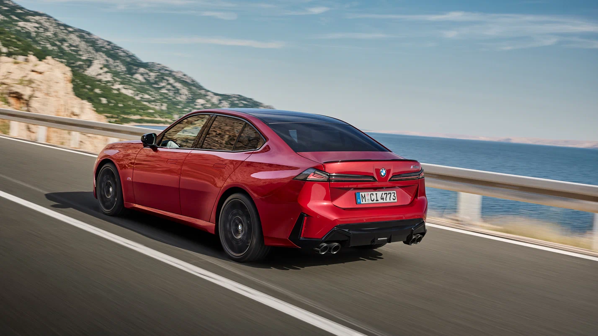
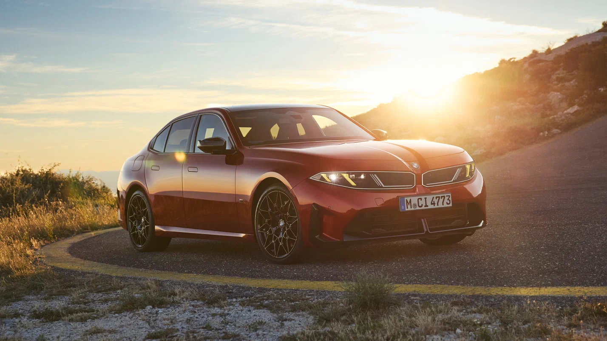

Внешность электрокара и 4,1 секунды до сотни: представлен новый BMW 3-й серии
Концерн BMW представил семейство 3-й серии нового поколения с ДВС. Пока продемонстрирован только седан, который сохранил прежнюю платформу CLAR, но обзавёлся полностью новыми внешностью и интерьером в стиле Neue Klasse, а также переосмысленным набором двигателей. В него вошли исключительно «мягкогибридные» четырёх- и шестицилиндровые бензиновые моторы, при этом гамма для США и Европы будет отличаться. Самый мощный агрегат обеспечит седану ускорение до 100 км/ч за 4,1 секунды. Цены на данный момент названы только для США, где за новую «тройку» будут просить минимум 49,9 тысячи долларов.

Внешность новой топливной «тройки» выдержана в строгом соответствии с политикой Neue Klasse, однако точной копией BMW i3 новинка не стала. Объясняется это не только необходимостью интегрировать ДВС в переднюю часть, но и стремлением BMW сохранить некоторые визуальные отличия. К примеру, седан получил чуть удлинённую переднюю часть со сравнительно более крупными воздухозаборниками, а также незначительно изменённую линию остекления в задней части. Особенностями BMW M350 станут диффузор и четыре оконечника выхлопных труб.
При длине 4765 миллиметров BMW 3-й серии имеет колёсную базу 2860 миллиметров. Тем самым бензиновый седан слегка длиннее электрического, но уступает ему по расстоянию между осями, которое у i3 составляет 2897 миллиметров. Таким образом, топливная и батарейная версии «тройки» получили немного отличающиеся пропорции кузова.

В Европе базовой версией «тройки» станет вариант с индексом 318. Его укомплектуют 2,0-литровой «четвёркой» на 156 л.с. и 250 Нм в сочетании с восьмидиапазонной коробкой. На разгон до 100 км/ч такой седан потратит 9,5 секунды. Промежуточное положение займёт BMW 320 с мотором того же объёма, отдача которого увеличена до 211 л.с. и 330 Нм. Соответственно, время разгона до 100 км/ч уменьшится до 7,4 секунды.

Флагманом семейства станет полноприводный BMW M350, идущий на смену прежней версии M340. В этом случае применён уже шестицилиндровый турбомотор объёмом 3,0 литра, который обеспечит 426 л.с. и 560 Нм и набор первой сотни за 4,1 секунды. К каждому из двигателей пристыкован компактный электромотор, добавляющий от 11 до 18 л.с. и 60 Нм. Соответственно, совокупная отдача силовой установки M350, по расчётам компании, составляет 443 л.с.